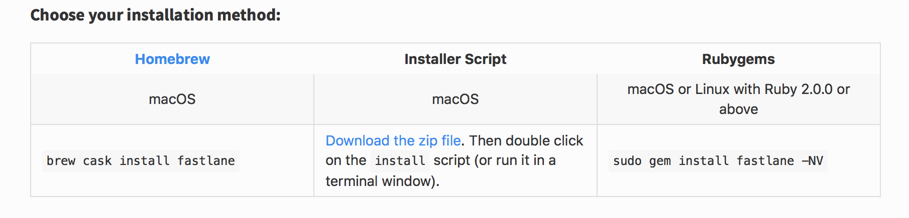
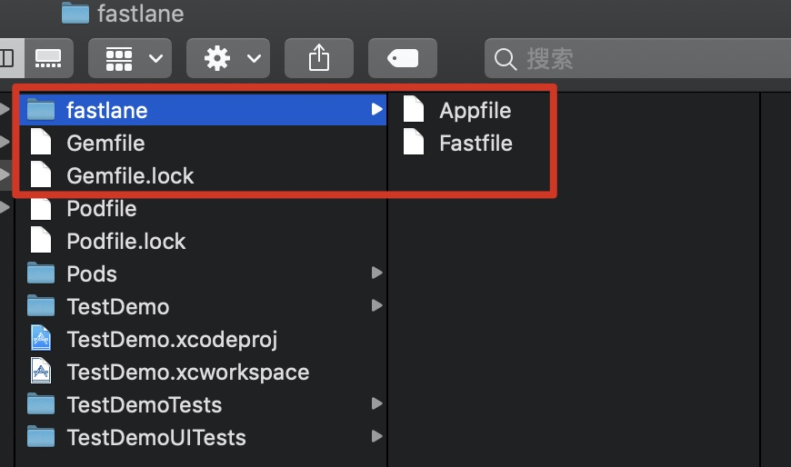
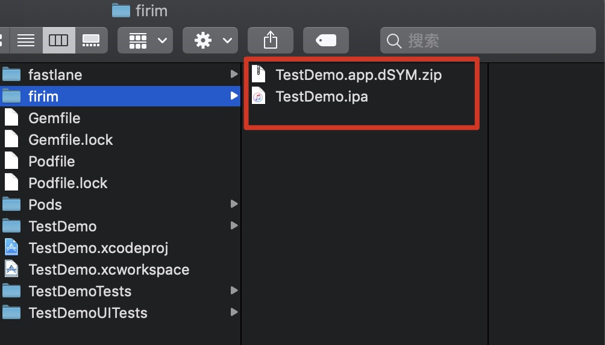
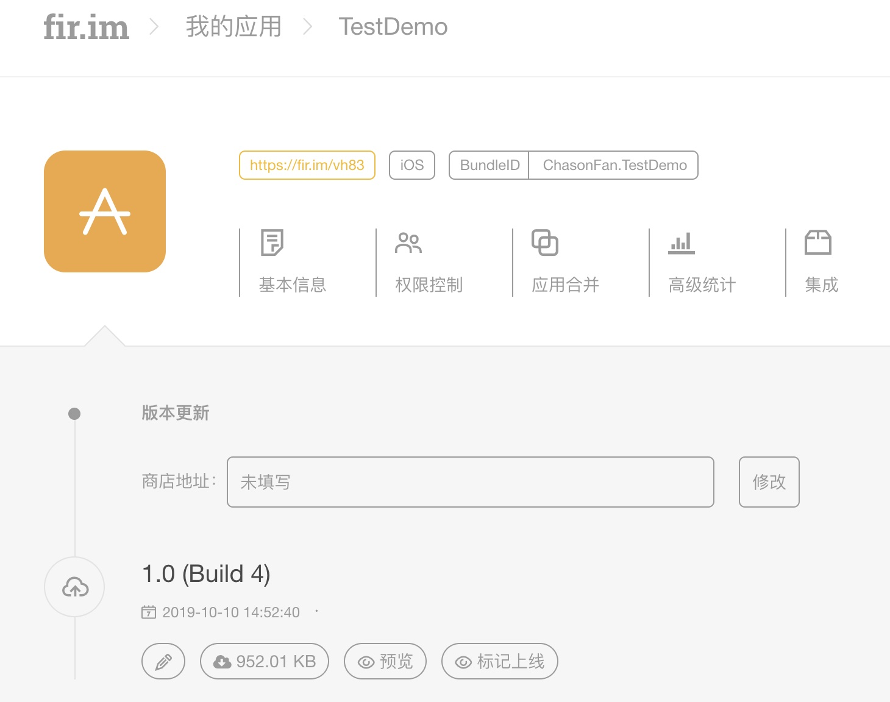
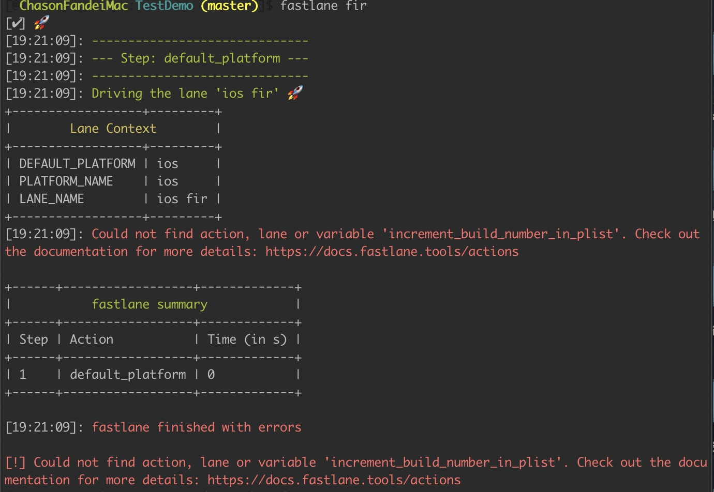

前言
日复一日重复打包工作，是在浪费宝贵的时间
自动化打包工具应运而生，是我们解放双手的利器
安装fastlane
安装最新的Xcode命令行工具
可以Developer Apple上手动下载对应的
Command Line Tools安装
fastlane官方推荐的xcode-select --install 安装时最后结果是*不能安装该软件***
安装 fastlane
放到/usr/local/bin下面
sudo gem install -n /usr/local/bin fastlane
其他的安装方法：（扩展，可跳过）

第一种是通过 Homebrew 软件包管理器来进行安装，
第二种就是我们最熟悉的方式，下载安装包来进行安装,
第三种是通过 RubyGems 来进行，RubyGems 是一个方便的 Ruby 程序包管理器，可以将一个 Ruby 应用程序打包到一个 Gem 里，作为一个安装单元。 一个 Gem 就是一个封装起来的应用程序或代码库
配置环境变量
添加用户环境变量
vim ~/.bash_profile
添加
1 | ... |
保存退出，使用 source ~/.bash_profile 来使配置立即生效
现在在项目根目录下可以使用fastlane了
fastlane使用
在项目根目录下初始化
fastlane init
四个选项
1
2
3
4
5
6What would you like to use fastlane for?
1.Automate screenshots
2.Automate beta distribution to TestFlight
3.Automate App Store distribution
4.Manual setup - manually setup your project to automate your tasks解释：
1
2
3
41 自动截屏。（帮助我们截取App的显示到appstore上的 截图）
2 自动发布beta到TestFlight上，用于内测。
3 自动打包发布到AppStore上。
4 手动设置。
上传fir选择的4
- 初始化成功会生成如下目录

配置相关文件
配置Gemfile
如果使用cocoapods要加上（注意带上当前安装的pod的版本号，否则会报错）
gem 'cocoapods', '~>1.8.3'
执行
bundle install
第一次运行 bundle install 时自动生成 Gemfile.lock 文件。以后每次运行 bundle install 时,如果 Gemfile 中的条目不变 bundle 就不会再次计算 gem 依赖版本号，直接根据 Gemfile.lock 检查和安装 gem。如果出现依赖冲突时可以通过 bundle update 更新 Gemfile.lock
配置Fastfile
1 | default_platform(:ios) |
关于build_number与version_number
1,version_number、build_number都没有设置，会自动获取项目的version和build版本号，并且都自动加1。例如，fastlane打包前后版本号变化：ver1.0.2（Build 11）-> ver1.0.3（Build 12）；
2,version_number设置了、build_number没设置，会自动获取项目build版本号，build版本号+1；
3,version_number、build_number都设置了，那打包出来的版本号就是设置的版本号，不会自动+1；
添加两个插件
1 | fastlane add_plugin versioning |
执行打包
上传fir.im
fastlane fir
fir为Fastfile文件中lane :fir do处设置的名字，可以为别的名字
执行打包成功如下图所示：

根目录下
firim文件夹下可看到ipa文件
fir.im应用列表，多了刚上传的项目

上传testFlight
fastlane tf
问题
- Could not find action, lane or variable ‘increment_build_number_in_plist’…

解决：
fastlane add_plugin versioning
参考：https://github.com/SiarheiFedartsou/fastlane-plugin-versioning/issues/20